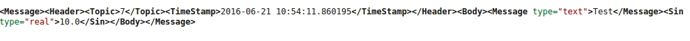
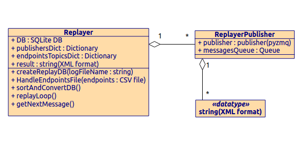
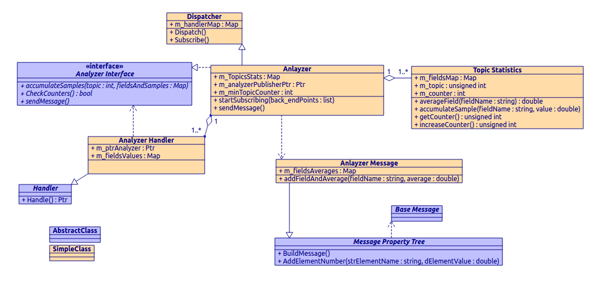
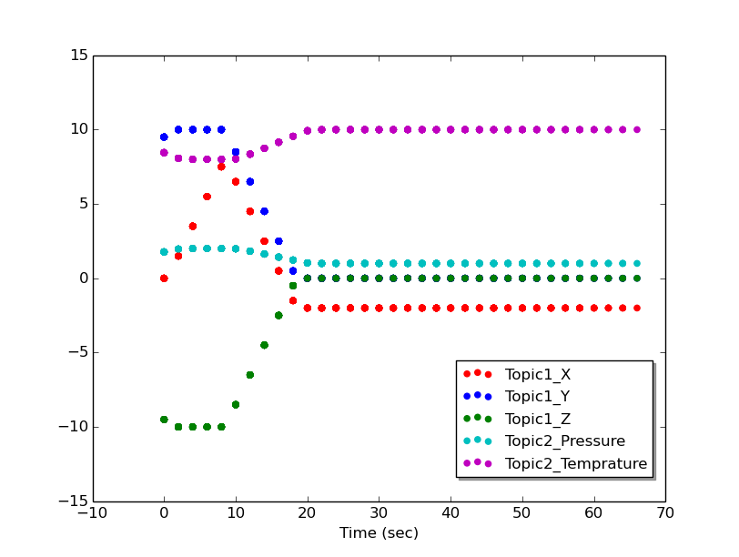
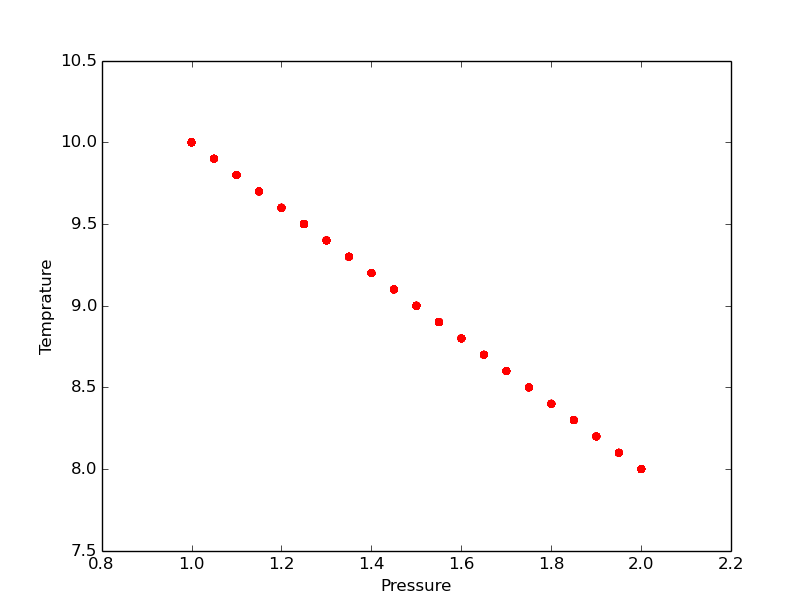
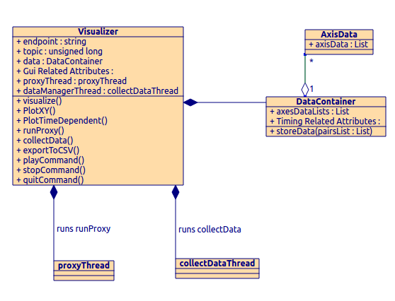
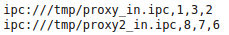

IS4AEPs stands for Infrastructure Software for Asynchronous Event-driven Protocols.
It is a communication library designed to provides an infrastructure for distributed, large scale, RT asynchronous systems.
It was designed and implemented by David Dovrat as from 2013, with additions by Gal Zamir and Leiran Sobih in 2016.
To provide tools for simulating, debugging and monitoring IS4AEPs based system
The IS4AEPs library enables the user to build a communication system in any desired protocol and in any scale.
It allows communication from a subscriber to any number of publishers, and from a publisher to any number of subscribers.
Furthermore, it allows to determine event-driven operations to every subscriber in the system.
The following is a top-level description of the system. for more information see project documents by Gal Zamir and Leirn Sobih in the "Docs" folder.
IS4AEPs has 3 key elements:
A Closer look on IS4AEPs elements :
Base Message - an Abstract-Base-Class for message header. Contains timestamp and ,topic only.
Message Property Tree - an Abstract-Base-Class for message body. Provides an interface to build a message in structured format.
determines the message body attributes and data types. currently XML or Json.
Important Note #1 - the meaning of topic: messages with same Topic have the same structure and attributes.
Handler – an Abstract-Base-Class for message handler. provides an interface to process a messages with a specific Topic.
Determines the node behavior when a message is received.
Important Note #2 - IS4AEPs provides a Service Topic Message and Service Topic Handler Implementation.
This allows control over system nodes, which is a need for any system.
Proxy - The proxy is the main router of the system.
Every node at the system is connected to it, and besides transferring messages, it also logs every message.
Each proxy has three sockets which are connected to it:
Publisher - A publisher connects to an endpoint (proxy) and publishes (sends) messages to that end point.
Each Publisher has it's own topic.
Dispacther - The dispatcher is the heart of the IS4AEPs library.
Each node should have a dispatcher, which allows the node to send or receive messages.
The dispacther runs a loop in which it waits for an incoming message. upon message receiving, it activates message handler based on incoming message topic.
The dispathcer has mapping of topics to message handlers.
The dispacther has a list of publishers which allows it to send messages.
Important Note #3 - Assigning proxies endpoints and nodes ID's can be easily done with Cmake tool.
See Installation Guide at the end of the documentation.
Example of message after implementation of messages abstract-base-classes:
UML Example of an implemented IS4AEPs based system:

Generic Tools - The tool box should be compatible with any IS4AEPs based system.
Therefore Implementation must use only IS4AEPs given components, concepts and dependencies.
For example: tools must support any possible type of message derived from Base Message ABC.
Real Time Ready - some tools may extend outside development process and act as an integral part in IS4AEPs based system.
Implementation of these should be efficient and simple.
Modularity – each tool has a value as a standalone, and the tools can be used together for increased value.
Provides control on system nodes: pause, resume or terminate node operation.
Also allows time sync between nodes.
Captures message traffic of the system by logging it's proxies log endpoint.
Messages simulation tool
Replayer Class Diagram :
Tool for extracting specific data from several topics and publish it as a new topic
Analyzer currently is the most complexed tool in box.
It's functionality is being implemented using several classes :
For each requested attribute, the published data is a statistical function of the accumulated data.
Average is the default. other function examples: weighted average, covariance.
Analyzer Class Diagram :
Live Chart viewer tool
Time Dependent chart:  XY Dependent chart: 
Important note - steps 2 and 3 are performed automatically by the Visualizer, once the user launched it
Visualizer Class Diagram :
 <The modularity of IS4AEPs Tool Box allows adding new tools easily.
During the work on the project i have used the following tools and programming libraries :
I have learned and practiced the following design-patterns:
I have practiced designing and implementing tools according to user definitions, oriented to provide development and debugging needs.
I have combined programing in several fields - Data Structures, Communication , Data Bases
./dt.py ‹ command › ‹ nodes › ‹ service proxy front endpoint ›
Example:
./dt.py terminate 1 ipc:///temp/serivceProxy_in.ipc
./dt.logger ‹ proxy1 log endpoint › ‹ proxy2 log endpoint › ... ‹ proxyN log endpoint ›
Example:
./logger.py ipc:///tmp/proxy1_log.ipc ipc:///tmp/proxy2_log.ipc"
./Replay.py ‹ logger output sql file › ‹ simulation rate › ‹ proxy configuration ›
Proxy configuration parameter can be one of the below :
Single proxy endpoint - in this case all simulated messages will be sent to that proxy
CSV format file of prxoy-topic mapping - in this case each topic is assigned to endopint. example for CSV proxy-topic mapping :

Example:
./Replay.py dumpTestFile.sql 50 ipc:///tmp/proxy_in.ipc
Or:
./Replay.py dumpTestFile.sql 50 replayInput.csv
Launched with exe file
./analyzer ‹inputFile.csv›
input csv file has the following format:
proxy,‹ proxy front endpoint ›
serviceProxy,‹ proxy back endpoint ›
topicsAndFields,‹ topic1,field1,...filedM,topic2,filed1,...TopicN,filed1... ›
analyzerTopic,‹ topic ›
analyzerNodeID,‹ ID ›
backEndPoints,‹ proxy back endpoint1,...,proxy back endpointN ›
Example for CSV file:
Example:
./analyzer analyzerInput.csv
./Visualizer.py ‹ proxy back endpoint › ‹ topic to visualize ›
Example:
./Visualizer.py ipc:///tmp/proxy_out.ipc 6
Cmake is a tool which provides a GUI for easy compilation and configuration of software projects.
when given a source code path, it creates ready-to-build binaries, while linking libraries and dependencies if needed.
The user only needs to run compile and install commands (on a linux machine. for other OS see online Cmake documentation).
Cmake requires a CMakeLists.txt file to be present in every source code folder.
CMakeLists.txt determines the different compile and configurtaion options, relevant to source code in it's folder.
The user should edit the file according to it;s needs, then activate Cmake.
Compiling and installing IS4AEPs and the Tool Box is intuitive with Cmake.
Important Note: Adding or changing IS4AEPs components only require changes in the appropriate CMakeLists.txt files.
See Cmake online documentation for CMakeLists.txt file options.
Looking at the current project CMakeLists.txt files will also help
An example is given to show the power of Cmake tool.
Given an IS4AEPS based system which has 2 implemented node types ("Chatter" and "Listener"), and requires 3 proxies,
by configuring correctly the CMakeLists.txt files we can easly determine the proxies endpoints and node ID's,
thus allowing flexibility for the project (no need to hard code or request from the user).
In addition, linking to IS4AEPs library and setting install path are trivial :